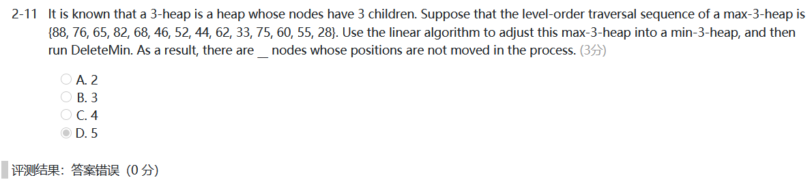

WEEK 6
4 Priority Queues (Heaps)
4.1 ADT Model
- Objects :A finite ordered list with zero or more elements.
- Operations :
- PriorityQueue Initialize( int MaxElements );
- void Insert( ElementType X, PriorityQueue H );
- ElementType DeleteMin( PriorityQueue H );
- ElementType FindMin( PriorityQueue H );
4.2 Implementations
Array
-
Insertion — add one item at the end ~$\Theta(1)$
-
Deletion — find the largest / smallest key ~$\Theta(n)$
remove the item and shift array ~$O(n)$
Linked List
-
Insertion — add to the front of the chain ~$\Theta(1)$
-
Deletion — find the largest / smallest key ~$\Theta(n)$
remove the item ~$\Theta(1)$
- Never more deletions than insertions
Ordered Array
- Insertion — find the proper position ~$O(\log n)$
shift array and add the item ~$O(n)$
- Deletion — remove the first / last item ~$\Theta(1)$
Ordered Linked List
- Insertion — find the proper position ~$O(n)$
add the item ~$\Theta(1)$
- Deletion — remove the first / last item ~$\Theta(1)$
Binary Search Tree
- Both insertion and deletion will take $O(\log N)$ only.
- Only delete the the minimum element, always delete from the left subtrees.
- Keep a balanced tree
- But there are many operations related to AVL tree that we don't really need for a priority queue.
4.3 Binary Heap
Structure Property
[Definition] A binary tree with $n$ nodes and height $h$ is complete if its nodes correspond to the nodes numbered from $1$ to $n$ in the perfect binary tree of height $h$.
-
A complete binary tree of height $h$ has between $2^h$ and $2^{h+1}-1$ nodes.
-
$h=\lfloor\log N\rfloor$
-
Array Representation : BT[n + 1] ( BT[0] is not used)

[Lemma]
- $index\,of\,parent(i)=\left{ \begin{array}{rcl} \lfloor i/2\rfloor && {i\neq1}\ None && {i=1}\ \end{array} \right.$
- $index\,of\,left_child(i)=\left{ \begin{array}{rcl} 2i && {2i\leq n}\ None && {2i>n}\ \end{array} \right.$
- $index\,of\,right_child(i)=\left{ \begin{array}{rcl} 2i+1 && {2i+1\leq n}\ None && {2i+1>n}\ \end{array} \right.$
PriorityQueue Initialize( int MaxElements )
{
PriorityQueue H;
if ( MaxElements < MinPQSize )
return Error( "Priority queue size is too small" );
H = malloc(sizeof( struct HeapStruct ));
if ( H == NULL )
return FatalError( "Out of space!!!" );
/* Allocate the array plus one extra for sentinel */
H->Elements = malloc(( MaxElements + 1 ) * sizeof( ElementType ));
if ( H->Elements == NULL )
return FatalError( "Out of space!!!" );
H->Capacity = MaxElements;
H->Size = 0;
H->Elements[0] = MinData; /* set the sentinel */
return H;
}
Heap Order Property
[Definition] A min tree is a tree in which the key value in each node is no larger than the key values in its children (if any). A min heap is a complete binary tree that is also a min tree.
- We can declare a max heap by changing the heap order property.
Basic Heap Operations
- Insertion
c
/*H->Element[ 0 ] is a sentinel that is no larger than the minimum element in the heap.*/
void Insert( ElementType X, PriorityQueue H )
{
int i;
if ( IsFull( H ))
{
Error( "Priority queue is full" );
return;
}
for ( i = ++H->Size; H->Elements[ i/2 ] > X; i /= 2 )
H->Elements[ i ] = H->Elements[ i/2 ]; /*Percolate up, faster than swap*/
H->Elements[ i ] = X;
}
$$ T(N)=O(\log N) $$
- DeleteMin
c
ElementType DeleteMin( PriorityQueue H )
{
int i, Child;
ElementType MinElement, LastElement;
if ( IsEmpty( H ) )
{
Error( "Priority queue is empty" );
return H->Elements[ 0 ];
}
MinElement = H->Elements[ 1 ]; /*Save the min element*/
LastElement = H->Elements[ H->Size-- ]; /*Take last and reset size*/
for ( i = 1; i * 2 <= H->Size; i = Child ) /*Find smaller child*/
{
Child = i * 2;
if (Child != H->Size && H->Elements[Child+1] < H->Elements[Child])
Child++;
if ( LastElement > H->Elements[ Child ] ) /*Percolate one level*/
H->Elements[ i ] = H->Elements[ Child ];
else
break; /*Find the proper position*/
}
H->Elements[ i ] = LastElement;
return MinElement;
}
$$
T(N)=O(\log N)
$$
Other Heap Operations
-
查找除最小值之外的值需要对整个堆进行线性扫描
-
DecreaseKey — Percolate up
-
IncreaseKey — Percolate down
-
Delete
-
BuildHeap
将N 个关键字以任意顺序放入树中，保持结构特性，再执行下滤
c
for (i = N/2; i > 0; i--)
PercolateDown(i);
$$ T(N)=O(N) $$
[Theorem] For the perfect binary tree of height $h$ containing $2^{h+1}-1$ nodes, the sum of the heights of the nodes is $2^{h+1}-1-(h+1)$.

4.4 Applications of Priority Queues
Heap Sort
查找一个序列中第k小的元素
The function is to find the K-th smallest element in a list A of N elements. The function BuildMaxHeap(H, K) is to arrange elements H[1] ... H[K] into a max-heap.
ElementType FindKthSmallest ( int A[], int N, int K )
{ /* it is assumed that K<=N */
ElementType *H;
int i, next, child;
H = (ElementType*)malloc((K+1)*sizeof(ElementType));
for ( i = 1; i <= K; i++ ) H[i] = A[i-1];
BuildMaxHeap(H, K);
for ( next = K; next < N; next++ ) {
H[0] = A[next];
if ( H[0] < H[1] ) {
for ( i = 1; i*2 <= K; i = child ) {
child = i*2;
if ( child != K && H[child+1] > H[child] ) child++;
if ( H[0] < H[child] )
H[i] = H[child];
else break;
}
H[i] = H[0];
}
}
return H[1];
}
4.5 $d$-Heaps — All nodes have $d$ children
Note :
- DeleteMin will take $d-1$ comparisons to find the smallest child. Hence the total time complexity would be $O(d \log_d N)$.
- 2 or /2 is merely a bit shift, but d or /d is not.
- When the priority queue is too large to fit entirely in main memory, a d-heap will become interesting.


正确答案是4，注意“in the process”